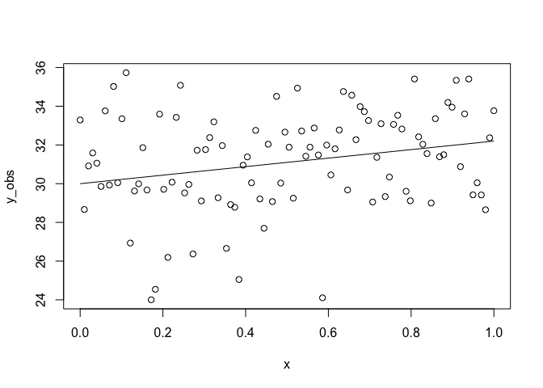
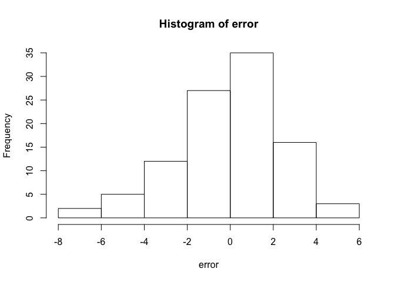
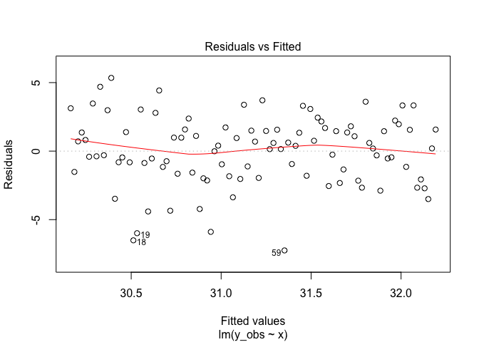
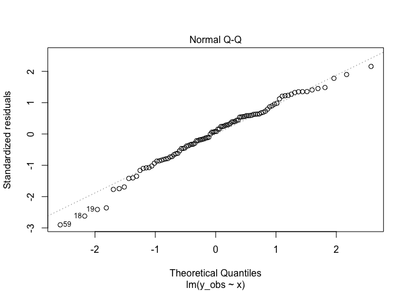

General Linear Models: The Basics
General linear models are one of the most widely used statistical tool in the biological sciences. This may be because they are so flexible and they can address many different problems, that they provide useful outputs about statistical significance AND effect sizes, or just that they are easy to run in many common statistical packages.
The maths underlying General Linear Models (and Generalized linear models, which are a related but different class of model) may seem mysterious to many, but are actually pretty accessible. You would have learned the basics in high school maths.
We will cover some of those basics here. You might like to read my blog on Genealized linear model link functions after this one.
Linear equations
As the name suggests General Linear Models rely on a linear equation, which in its basic form is simply:
yi = α + βxi + ϵ*i
The equation for a straight line, with some error added on.
If you aren’t that familiar with mathematical notation, notice a few things about this equation (I have followed standard conventions here). I used normal characters for variables (i.e. things you measure) and Greek letters for parameters, which are estimated when you fit the model to the data.
yi are your response data, I indexed the y with i to indicate that there are multiple observations. xi is variously known as a covariate, predictor variable or explanatory variable. α is an intercept that will be estimated. α has the same units as y. (e.g. if y is number of animals, then α is expected the number of animals when x = 0).
β is a slope parameter that will also be estimated. β is also termed the effect size because it measures the effect of x on y. β has units of ‘y per x’. For instance, if x is temperature, then β has units of number of animals per degree C. β thus measures how much we expect y to change if x were to increase by 1.
Finally, don’t forget ϵi, which is the error. ϵi will measure the distance between each prediction of yi made by the model and the observed value of yi.
These predictions will simply be calculated as:
yi = α + βxi*
(notice I just removed the ϵi from the end). You can think of the linear predictions as: the mean or ‘expected’ value a new observation yi would take if we only knew xi and also as the ‘line of best fit’.
Simulating ideal data for a general linear model
Now we know the model, we can generate some idealized data. Hopefully this will then give you a feel for how we can fit a model to data. Open up R and we will create these parameters:
n <- 100
beta <- 2.2
alpha <- 30Where n is the sample size and alpha and beta are as above.
We also need some covariate data, we will just generate a sequence of n numbers from 0 to 1:
x <- seq(0, 1, length.out = n)The model’s expectation is thus this straight line:
y_true <- beta * x + alpha
plot(x, y_true)
Because we made the model up, we can say this is the true underlying relationship. Now we will add error to it and see if we can recover that relationship with a general linear model.
Let’s generate some error:
sigma <- 2.4
set.seed(42)
error <- rnorm(n, sd = sigma)
y_obs <- y_true + error
plot(x, y_obs)
lines(x, y_true)
Here sigma is our standard deviation, which measures how much the observations y vary around the true relationship. We then used rnorm to generate n random normal numbers, that we just add to our predicted line y_true to simulate observing this relationship.
Congratulations, you just created a (modelled) reality a simulated an ecologist going out and measuring that reality.
Note the set.seed() command. This just ensures the random number generator produces the same set of numbers every time it is run in R and it is good practice to use it (so your code is repeatable). Here is a great explanation of seed setting and why 42 is so popular.
Also, check out the errors:
hist(error)
Looks like a normal distribution hey? That’s because we generated them from a normal distribution. That was a handy trick, because the basic linear model assumes the errors are normally distributed (but not necessarily the raw data).
Also note that sigma is constant (e.g. it doesn’t get larger as x gets larger). That is another assumption of basic linear models called ‘homogeneity of variance’.
Fitting a model
To fit a basic linear model in R we can use the lm() function:
m1 <- lm(y_obs ~ x)It takes a formula argument, which simply says here that y_obs depends on (the tilde ~) x. R will do all the number crunching to estimate the parameters now.
To see what it came up with try:
coef(m1)
## (Intercept) x
## 30.163713 2.028646This command tells us the estimate of the intercept ((Intercept)) and the slope on x under x. Notice they are close to, but not exactly the same as alpha and beta. So the model has done a pretty decent job of recovering our original process. The reason the values are not identical is that we simulated someone going and measuring the real process with error (that was when we added the normal random numbers).
We can get slightly more details about the model fit like this:
summary(m1)
##
## Call:
## lm(formula = y_obs ~ x)
##
## Residuals:
## Min 1Q Median 3Q Max
## -7.2467 -1.5884 0.1942 1.5665 5.3433
##
## Coefficients:
## Estimate Std. Error t value Pr(>|t|)
## (Intercept) 30.1637 0.4985 60.503 <2e-16 ***
## x 2.0286 0.8613 2.355 0.0205 *
## ---
## Signif. codes: 0 '***' 0.001 '**' 0.01 '*' 0.05 '.' 0.1 ' ' 1
##
## Residual standard error: 2.511 on 98 degrees of freedom
## Multiple R-squared: 0.05357, Adjusted R-squared: 0.04391
## F-statistic: 5.547 on 1 and 98 DF, p-value: 0.0205I’m not going to go overboard with explaining this output now, but notice a few key things. With the summary, we get standard errors for the parameter estimates (which is a measure of how much they might vary). Also notice the R-squared, which can be handy. Finally, notice that the Residual standard error is close to the value we used for sigma, which is because it is an estimate of sigma from our simulated data.
Your homework is play around with the model and sampling process. Try change alpha, beta, n and sigma, then refit the model and see what happens.
Final few points
So did you do the homework? If you did, well done, you just performed a simple power analysis (in the broad sense).
In a more formal power analysis (which is what you might have come across previously) could systematically vary n or beta and for 1000 randomised data sets and then calculate the proportion out of 1000 data-sets that your p-value was ‘significant’ (e.g. less than a critical threshold like the ever-popular 0.05). This number tells you how good you are at detecting ‘real’ effects.
Here’s a great intro to power analysis in the broad sense: Bolker, Ecological Models and Data in R
One more point. Remember we said above about some ‘assumptions’. Well we can check those in R quite easily:
plot(m1, 1)
This shows a plot of the residuals (A.K.A. errors) versus the predicted values. We are looking for ‘heteroskedasticity’ which is a fancy way of saying the errors aren’t equal across the range of predictions (remember I said sigma is a constant?).
Another good plot:
plot(m1, 2)
Here we are looking for deviations of the points from the line. Points on the line mean the errors are approximately normally distributed, which was a key assumption. Points far from the line could indicate the errors are skewed left or right, too fat in the middle, or too in the middle skinny. More on that issue here
The end
So the basics might belie the true complexity of situations we can address with General Linear Models and their relatives Generalized Linear Models. But, just to get you excited, here are a few things you can do by adding on more terms to the right hand side of the linear equation:
- Model multiple, interacting covariates.
- Include factors as covariates (instead of continuous variables). Got a factor and a continuous variable? Don’t bother with the old-school ANCOVA method, just use a linear model.
- Include a spline to model non-linear effects (that’s a GAM).
- Account for hierarchies in your sampling, like transects sampled within sites (that’s a mixed effects model)
- Account for spatial or temporal dependencies.
- Model varying error variance (e.g. when the variance increases with the mean).
You can also change the left-hand side, so that it no longer assumes normality (then that’s a Generalized Linear Model). Or even add chains of models together to model pathways of cause and effect (that’s a ‘path analysis’ or ‘structural equation model’)
If this taster has left you keen to learn more, then check out any one of the zillion online courses or books on GLMs with R, or if you can get to Brisbane, come to our next course (which as of writing was in Feb 2018, but we do them regularly).
Now you know the basics, practice, practice, practice and pretty soon you will be running General Linear Models behind your back while you watch your 2 year old, which is what I do for kicks.